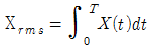
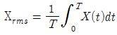
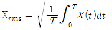
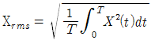

설비보전기사(구) (2015-05-31 기출문제)
1과목: 설비 진단 및 계측
1. 다음 중 탄성식 압력계에 속하지 않는 것은?
- 벨로스식
- 압전기식
- 부르동관식
- 다이어램프식
(정답률: 79%)

2. 순수한 정현파의 실효값 계산식으로 옳은 것은?




(정답률: 82%)
3. 다음 중 전력(P)를 계산하는 식으로 틀린 것은?
- P=VI[W]
- P=I2R[W]
- P=VR[W]
- P=V2/R [W]
(정답률: 71%)
4. 다음 중 회전 속도 또는 각속도의 검출이 가능한 것은?
- 플래퍼
- 바이메탈
- 오리피스
- 자이로스코프
(정답률: 78%)
5. 다음과 같은 가속도 센서 부착 방법 중 진동 측정 주파수 범위가 가장 넓은 부착 방법은?
- 나사(stud) 고정
- 밀랍(bee-wax) 고정
- 마그네틱(magnetic) 고정
- 손(hand hold probe) 고정
(정답률: 85%)
6. 주파수에 관한 설명 중 틀린 것은?
- 주파수의 단위는 Hz이다.
- 주파수는 60초 동안의 사이클 수를 말한다.
- 한 주기 동안에 걸린 시간이 길수록 주파수는 낮다.
- 동일한 질량의 경우 강성이 클수록 주파수는 높다.
(정답률: 78%)
7. 진행파에 대한 설명으로 맞는 것은?
- 음파의 파면들이 서로 평행한 파
- 음파의 진행 방향으로 에너지를 전송하는 파
- 음원에서 모든 방향으로 동일한 에너지를 전송하는 파
- 음원으로부터 거리가 멀어질수록 더욱 넓은 면적으로 퍼져 나가는 파
(정답률: 80%)
8. 다음 중 진동의 전달 경로 차단 방법과 가장 거리가 먼 것은?
- 진동 차단기 설치
- 기초(base)의 진동을 제어하는 방법
- 질량이 큰 경우 거더(girder)의 이용
- 언밸런스(unbalance)의 양을 크게 하는 방법
(정답률: 86%)
9. 음의 진행 방향에 수직하는 단위 면적을 단위 시간에 통과하는 음의 에너지를 무엇이라 하는가?
- 음압
- 음의 세기
- 음향 출력
- 음의 지향성
(정답률: 81%)
10. 다음 중 기류음에 대한 설명으로 옳은 것은?
- 기계 본체의 진동에 의한 소리이다.
- 물체의 진동에 의한 기계적 원인으로 발생한다.
- 기계의 진동이 지반 진동을 수반하여 발생하는 소리이다.
- 직접적인 공기의 압력 변화에 의한 유체 역학적 원인에 발생된다.
(정답률: 77%)
11. 다음 중 관로에서의 유량 측정 방법이 아닌 것은?
- 노즐(nozzle)
- 오리피스(orifice)
- 피에조미터(piezometer)
- 벤투리미터(venturi meter)
(정답률: 73%)
12. 다음 중 소음 방지 방법으로 적합하지 않은 것은?
- 차음
- 흡음
- 질량 증가
- 소음기 장착
(정답률: 88%)
13. 등청감 곡선이란?
- 음파의 시간적 변화를 표시한 곡선
- 음의 물리적 강약을 음압에 따라 표시한 곡선
- 사람의 귀와 같은 크기의 음압을 주파수별로 구하여 작성한 곡선
- 정상 청력을 가진 사람이 1000 Hz에서 들을 수 있는 최소 음압을 작성한 곡선
(정답률: 85%)
14. 회전체에서 구동부와 피구동부를 커플링으로 연결한 상태에서 회전 중심축(축심)이 상하좌우 및 편각을 가지고 어긋나 있는 상태를 나타내는 현상은?
- 공진(resonance)
- 오일 휩(oil whip)
- 언밸런스(unbalance)
- 미스얼라이먼트(misalignment)
(정답률: 79%)
15. 회전수 계측법 중 전자식 검출법에 대한 설명으로 틀리 것은?
- 전원이 필요 없다.
- 내구성이 우수하다.
- 정지에 가까운 저속에서 좋다.
- 자속 밀도의 변화를 이용한다.
(정답률: 76%)
16. 진동의 크기를 표현하는 방법으로 사용되는 용어의 설명 중 틀린 것은 어느 것인가?
- 평균값 – 진동량을 평균한 값이다.
- 피크값 – 진동량의 절댓값의 최댓값이다.
- 실효값 – 진동 에너지를 표현하는 것으로 정현파의 경우는 피크값의 2배이다.
- 양진폭 – 전진폭이라고도 하며 양의 최댓값에서 부의 최댓값까지의 값이다.
(정답률: 86%)
17. 다음 중 회전체가 1분 동안에 회전한 횟수를 나타내는 단위는?
- Hz
- rev
- rpm
- ppm
(정답률: 86%)
18. 다음 중 음(sound)에 대한 설명으로 틀린 것은?
- 주기적인 현상이 매초 반복되는 횟수가 주파수이다.
- 장애물 뒤쪽으로 음이 전파되는 현상을 음의 굴절이라 한다.
- 소리는 대기의 온도차에 의한 굴절로 온도가 낮은 쪽으로 굴절한다.
- 음에너지에 의해 매질에는 압력 변화가 발생하는데 이를 음압이라 한다.
(정답률: 83%)
19. 앨리어싱(aliasing) 현상과 관련된 사항이 아닌 것은?
- 앨리어싱 현상이란 주파수 반환 현상을 말한다.
- 샘플링 시간이 큰 경우, 높은 주파수 성분의 신호를 낮은 주파수 성분으로 인지할 수 있다.
- 앨리어싱 현상을 제거하기 위해서는 샘플링 시간을 나이퀴스트(Nyquist) 샘플링 이론에 의하여 △t≤1/2fmax로 한다. (이때 fmax는 데이터에 내포된 가장 높은 주파수)
- 앨리어싱 현상을 방지하는 데 저역통과 필터인 안티 앨리어싱 필터를 샘플러와 A/D 변환기 뒤에 설치하여 측정 신호의 주파수 범위를 한 장시키고 있다.
(정답률: 67%)
20. 프로세스의 특성 중 입력 신호에 대한 출력 신호의 특성으로서 시간 영역에서는 인벌류선 적분이고, 주파수 영역에서는 전달 함수와 관련된 특성은?
- 외란
- 동특성
- 정특성
- 주파수 응답
(정답률: 80%)
2과목: 설비관리
21. 목표 설정할 때 이용되는 QC 수법이 아닌 것은?
- 체크 시트에 의한 방법
- 막대그래프에 의한 방법
- 히스토그램에 의한 방법
- 레이더 차트에 의한 방법
(정답률: 62%)
22. 다음은 설비 보전에서 효과 측정을 위한 척도로 널리 사용되는 지수이다. 식이 틀린 것은?
- 고장 도수율 = (고장 횟수 / 부하시간) ×100
- 고장 강도율 = (고장 정지시간 / 부하시간) ×100
- 설비 가동률 = (정미 가동시간 / 부하시간) ×100
- 제품 단위당 보전비 = 보전비 총액 / 부하시간
(정답률: 70%)
23. 공정별 배치에서 동일 기종이 모여 있는 시스템은?
- 갱 시스템(gang system)
- 라인 시스템(line system)
- 블록 시스템(block system)
- 혼합형 시스템(combination system)
(정답률: 79%)
24. 품질 보전이 설비 문제와 밀접한 관계를 갖고 있는 이유가 아닌 것은?
- 제조 현장의 자동화, 설비 고도화 등으로의 변화
- 설비의 상태에 따라 제품의 품질이 확보되는 시대의 도래
- 생산 공정 중에 발생하는 공정 불량의 최소화에 대한 무관심
- 품질에 영향을 끼치는 설비 고장은 돌발 고장형보다 기능 저하형이 주류
(정답률: 78%)
25. 품질의 불량은 여러 가지 원인에 의하여 발생한다고 볼 수 있다. 이를 위한 활동으로 거리가 먼 것은?
- 설비의 설계 개선 및 불량 발생 조건 제거
- 인적 자원의 교육, 훈련을 통한 다기능공화
- 원자재 재고의 확보를 통한 자재 공급의 안정화
- 제품, 가공물, 품질 특성에 유연하게 대처되는 설비 능력 확보
(정답률: 73%)
26. 설비의 종합 효율을 산출하기 위한 공식으로 맞는 것은?
- 종합 효율 = 시간 가동률 × 성능 가동률 × 양품률
- 종합 효율 = 속도 가동률 × 실질 가동률 × 양품률
- 종합 효율 = 속도 가동률 × 성능가동률 / 양품률
- 종합 효율 = 시간 가동률 × 실질 가동률 / 양품률
(정답률: 76%)
27. 다음 중 설비 계획의 목적이 아닌 것은?
- 전체 생산 시간의 최소화
- 자재 운반 비용의 최소화
- 설비에 대한 투자의 최대화
- 종업원의 편리, 안전을 제공함
(정답률: 75%)
28. 가공 및 조립형 산업에서의 설비 6대 로스와 가장 거리가 먼 것은?
- 고장 로스
- 시가동 로스
- 순간 정지 로스
- 속도 저하 로스
(정답률: 73%)
29. 설비 보전 활동 중에서 필요한 수리, 정비, 개수 등을 위한 제기능을 수행하여 설비에 투입되는 비용을 최소화하는데 목적을 두고 있는 것은?
- 공사 관리
- 부하 관리
- 외주 관리
- 일정 관리
(정답률: 74%)
30. 설비의 종류, 설비의 수, 크기와 용량 그리고 설비 위치 등에 연계된 보전 개념과 보전 작업의 결정 및 정보 연계로서 설비 계획 및 관리에 대한 명확한 책임 및 권한이 있으며 동종 설비의 여러 지역 설치로 보전 능력의 분산을 갖는 설비망은 어느 것인가?
- 시장 중심 설비망
- 제품 중심 설비망
- 공정 중심 설비망
- 프로젝트 중심 설비망
(정답률: 72%)
31. 다음 중 치구 사용 목적으로 적당하지 않은 것은?
- 생산 능력을 증대한다.
- 부품에 호환성을 준다.
- 근육 노동을 증가시킨다.
- 특수 작업을 용이하게 한다.
(정답률: 87%)
32. 설비의 경제성 평가 방법에 대한 설명 중 바르지 못한 것은?
- 평균 이자법의 연간 비용 산출은 정액 상각비+평균 이자+가동비 이다.
- 연평균 비교법은 설비의 내구 사용기간 사이의 자본 비용과 가동비의 합을 현재 가치로 환산하여 연평균 비용과 비교하여 대체안을 결정하는 방법이다.
- 자본 회수법에서 투자 계획에 의하여 얻을 수 있는 연평균 이윤(수입-지출)이 회수 금액보다 크면 이 투자 계획은 경제성이 없다고 판단되어 불채택 될 것이다.
- 구 MAPI(machinery allied products institute) 방식은 주로 투자 시기의 결정을 취급하였으나, 신 MAPI 방식은 투자 간의 순위 결정에 주로 사용하고 있다.
(정답률: 68%)
33. 가공 및 조립형 설비 손실에 포함되지 않는 것은?
- 가공 손실
- 시가동 손실
- 공정 불량 손실
- 속도 저하 손실
(정답률: 67%)
34. 상비품 품목 결정 방식 중 상비수 방식의 특성으로 틀린 것은?
- 관리 수속이 간단하다.
- 재고 금액이 적어진다.
- 구입 단가가 경제적이다.
- 재질 변경에 따른 손실이 많다.
(정답률: 60%)
35. 보전 방식의 변화 중에서 틀린 것은?
- 1940년대 – 예방 보전
- 1950년대 – 생산 보전
- 1960년대 – 종합 생산성 관리
- 2000년대 – 이익 중심 설비 관리
(정답률: 68%)
36. TPM의 5가지 활동 중 보전이 필요 없는 설비를 설계하여 가능한 빨리 설비의 안전 가동을 위한 활동은?
- 계획 보전 체제의 확립
- 작업자의 자주 보전 체제의 확립
- 설비의 효율화를 위한 개선 활동
- MP설계와 초기 유동 관리 체제의 확립
(정답률: 66%)
37. 설비의 잠재 열화 현상에 대한 정확한 상태를 예측하기 위하여 직접 설비를 감지(monitoring)하는 방법을 무엇이라 하는가?
- 계량 보전
- 상태 기준 보전
- 운전 중 검사(on stream inspection)
- 부분적 SD(shut down)
(정답률: 71%)
38. 전력 손실 중 직접 손실에 해당하지 않은 것은?
- 누전
- 기계의 공회전
- 공정 관리 불량
- 저능률 설비 사용
(정답률: 59%)
39. 자주 보전을 효과적으로 완성하기 위한 자주 보전 전개 스텝이 있다. 추진 방법의 절차가 올바른 것은?
- 총 점검→초기 청소→발생원 곤란개소 대책→점검 급유 기준 작성→자주 점검→자주 보전의 시스템화→자주 관리의 철저
- 자주 점검→발생원 곤란개소 대책→점검 급유 기준 작성→초기 청소→총 점검→자주 보전의 시스템화→자주 관리의 철저
- 총 점검→초기 청소→점검 급유 기준 작성→발생원 곤란개소 대책→자주 점검→자주 보전의 시스템화→자주 관리의 철저
- 초기 청소→발생원 곤란개소 대책→점검 급유 기준 작성→총 점검→자주 점검→자주 보전의 시스템화→자주 관리의 철저
(정답률: 79%)
40. 컴퓨터나 로봇에 여러 전문적 기술을 부여하여 이들이 자동화 공장의 문제점을 인식하고, 이를 해결하기 위한 방법을 스스로 찾아내는 것으로 설비의 특정 고장을 스스로 인지하고 더 나아가 고칠 수 있는 시스템은?
- 지능 기술 시스템
- 유연 기술 시스템
- 컴퓨터 제어 기계
- 유연 기술 셀 시스템
(정답률: 81%)
3과목: 기계일반 및 기계보전
41. 경도가 매우 높고 발열하면 안 되는 초경합금, 특수강 등의 연삭에 사용되는 숫돌 입자는?
- A
- C
- GC
- WA
(정답률: 76%)
42. 담금질에 관한 설명으로 틀린 것은?
- 냉각속도는 판재가 구형보다 빠르다.
- 냉각액을 저어주면 냉락 능력은 많이 향상된다.
- 담금질 경도는 강 중에 탄소량에 따라 변화한다.
- 냉각액의 온도는 물은 차게(20℃) 기름은 뜨겁게(80℃) 해야 한다.
(정답률: 62%)
43. 강재의 얇은 편으로 된 것으로 틈새 또는 홈의 간극 등을 점검하는데 사용하고 필러 게이지라고도 하는 게이지는?
- 나사 게이지
- 높이 게이지
- 틈새 게이지
- 다이얼 게이지
(정답률: 85%)
44. 조름 밸브라고 하며 밸브 판을 회전시켜 유량을 조절하는 밸브는?
- 감압 밸브
- 앵글 밸브
- 나비형 밸브
- 슬루스 밸브
(정답률: 73%)
45. 수평 배관용으로 사용되며 유체의 역류를 방지하는 밸브로 맞는 것은?
- 스윙 체크 밸브
- 글로브 체크 밸브
- 나비형 체크 밸브
- 파일럿 조작 체크 밸브
(정답률: 67%)
46. 축에서 가장 많이 발생하는 고장의 진행 형태를 순서대로 열거한 것은?
- 끼워 맞춤 불량→풀림 발생→미동 마모→기어 마모→치명적인 고장
- 끼워 맞춤 불량 →풀림 발생→기어 마모→미동 마모→치명적인 고장
- 풀림 발생 →끼워 맞춤 불량→미동 마모→기어 마모→치명적인 고장
- 끼워 맞춤 불량 →미동 마모→풀림 발생→기어 마모→치명적인 고장
(정답률: 67%)
47. 웜기어 감속기의 정비 시 웜휠의 이 간섭 면을 약간 중심을 어긋나게 해둔다. 그 이유로 옳은 것은?
- 상대적으로 마찰이 많은 웜 보호
- 이물질 제거를 용이하게 하기 위해
- 원활한 윤활유 공급과 윤활 상태 유지
- 부하 운전 시 웜의 휨 상태를 사전에 고려
(정답률: 82%)
48. 다음 중 볼트, 너트의 사용 방법으로 옳은 것은?
- 리머 볼트 구멍에 보통 볼트를 체결하여도 무방하다.
- 볼트, 너트, 스프링 와셔는 재상해도 상관없다.
- 로크너트는 두꺼운 너트는 아래쪽, 얇은 너트는 위쪽에 체결한다.
- 볼트, 너트를 수직으로 설치할 경우 너트는 점검하기 쉬운 쪽에 체결한다.
(정답률: 75%)
49. 축의 센터링 불량 시 나타나는 현상이 아닌 것은?
- 진동이 크다.
- 기계 성능이 저하된다.
- 커플링의 발열이 심하다.
- 베어링부의 마모가 심하다.
(정답률: 60%)
50. 마찰력형 클러치, 브레이크 중에서 습식다판의 특징이 아닌 것은?
- 고속, 고빈도용으로 사용한다.
- 작은 동력 전달에 주로 쓰인다.
- 접촉 면적을 크게 취할 수 있어 소형이다.
- 오일 속에서 쓰이므로 작동이 매끄럽고 마찰면의 마모가 작다.
(정답률: 57%)
51. 여러 줄 나사의 리드를 기입하는 방법으로 적합한 것은?
- 2줄 M12×1.5-L1/2
- 3줄 M12+R12.7
- 3줄 Tr32×1.5-L1/2
- 2줄 TW32(리드 12.7)
(정답률: 61%)
52. 3상 유도 전동기의 과열의 직접 원인이 아닌 것은?
- 빈번한 기동을 하고 있다.
- 과부하 운전을 하고 있다.
- 전원 3상 중 1상이 단락되어 있다.
- 배선용 차단기(NFB)가 작동하고 있다.
(정답률: 77%)
53. 관(pipe)의 플랜지 이음에 대한 설명을로 틀린 것은?
- 유체의 압력이 높은 경우 사용된다.
- 관의 지름이 비교적 큰 경우 사용된다.
- 가끔 분해, 조립할 필요가 있을 때 편리하다.
- 저압용일 경우 구리, 납, 연강 등을 사용한다.
(정답률: 76%)
54. 펌프 베어링 과열 시 원인 및 조치 사항으로 틀린 것은?
- 조립, 설치불량 – 축 정열 작업
- 윤활유 부족 – 기준 이상 유량 보충
- 패킹부의 맞춤 불량 – 글랜드 패킹의 조임 압력 조정
- 윤활유의 부적합 – 사용 조건에 따른 윤활유 선정
(정답률: 71%)
55. 보전용 재료로 사용되는 O링의 구비 조건으로 틀린 것은?
- 내노화성이 좋을 것
- 내마모성이 좋을 것
- 사용 온도 범위가 좁을 것
- 상대 급속을 부식시키지 말 것
(정답률: 81%)
56. 피복 아크 용접에서 용접 결함과 그 원인을 연결한 것 중 틀린 것은?
- 오버랩(overlap) – 용접 전류가 낮고 용접봉의 선택이 불량할 때
- 스패터(spatter) – 용접 전류가 낮고 아크 길이를 짧게 했을 때
- 언더컷(under cut) – 용접 전류가 높고 아크 길이가 너무 길 때
- 용입불량 – 용접 전류가 낮고 용접속도가 너무 빠를 때
(정답률: 60%)
57. 축의 굽음(bending) 측정용으로 적합한 측정 공기구는?
- 블록 게이지
- 다이얼 게이지
- 외경 마이크로미터
- 내경 마이크로미터
(정답률: 77%)
58. 송풍기를 설치한 곳의 기초 지반이 연약할 때 가장 큰 영향을 미치는 고장 발생의 현상은?
- 진동 발생이 크다.
- 댐퍼 조절이 나빠진다.
- 풍량과 풍압이 작아진다.
- 시동 시 과부하가 발생한다.
(정답률: 82%)
59. 원심식 압축기의 장점에 대한 설명으로 틀린 것은?
- 압력 맥동이 없다.
- 윤활이 용이하다.
- 고압 발생에 적합하다.
- 설치 면적이 비교적 적다.
(정답률: 69%)
60. 원판 브레이크의 제동력을 T라고 할 때, 틀린 설명은?
- 원판의 수량(Z)에 비례
- 접촉면의 마찰계수(μ)에 비례
- 원판 브레이크의 평균 반지름(R)에 비례
- 축의 수직 방향으로 가해지는 힘(P)에 비례
(정답률: 61%)
4과목: 윤활관리
61. 윤활유의 열화 판정법 중 간이 측정법에 해당되지 않는 것은?
- 사용유의 성상을 조사한다.
- 리트머트 시험지로 산성 여부를 판단한다.
- 냄새를 맡아 보아 불순물의 함유 여부를 판단한다.
- 시험관에 같은 양의 기름과 물을 넣고 심하게 교반 후 분리 시간으로 항유화성(抗乳化性)을 조사한다.
(정답률: 52%)
62. 다음 중 광유계 유압 작동유에 해당되는 것은?
- 물-글리콜계
- O/W 에멀션계
- 내마모성 작동유
- 합성 인산에스테르계
(정답률: 63%)
63. 무단 변속기에 사용되는 윤활유가 가져야 할 윤활 조건 중 가장 거리가 먼 것은 어느 것인가?
- 기포가 적을 것
- 내하중성이 클 것
- 절연성이 있을 것
- 점도 지수가 높을 것
(정답률: 57%)
64. 유압 장치의 플러싱을 실시하기 위한 적정 시기가 아닌 것은?
- 설치된 유압 장치의 분해 정비 후
- 사용유를 분석하여 윤활유를 교환할 때
- 기계 장치 신설 시 고형 물질, 절삭가루, 이물질 등의 제거가 필요할 때
- 순환 계통의 입구 유온과 냉각기 출구 유온과의 차가 일정한 기준치일 때
(정답률: 68%)
65. 운전 중 압축기 윤활유의 관리를 위한 점검 사항이 아닌 것은?
- 베어링 검사
- 윤활유의 양
- 윤활유 온도
- 윤활유의 색상
(정답률: 78%)
66. 윤활유 급유 방법-윤활제-윤활 장치의 종류를 순서대로 연결한 것 중 틀린 것은?
- 수동 급유-그리스-그리스 건
- 적하 급유-윤활유-심지 급유기
- 자기 순환 급유-윤활유-분무 장치
- 강제 순환 급유-그리스-자동 집중 급유 장치
(정답률: 66%)
67. 비순환 급유법에 해당하는 것은?
- 바늘 급유법
- 비말 급유법
- 유욕 급유법
- 패드 급유법
(정답률: 53%)
68. 윤활제의 기능 중 냉각 작용에 대한 설명으로 옳은 것은?
- 윤활 시스템 내에서 오염 물질들을 씻어내는 작용
- 윤활제가 마찰열을 흡수하여 계 외로 방출시키는 작용
- 국부 압력을 액 전체에 균등하게 분산시켜 국부적인 마멸을 방지하는 작용
- 고부하 및 저속 마찰부와 같이 경계 마찰일 발생되는 곳의 강인한 피막 형성
(정답률: 74%)
69. 윤활제에 사용되는 첨가제 중 소포제 첨가의 주된 목적은?
- 온도에 따른 점도 변화율의 감소
- 물과 친화성이 있는 광유를 생성
- 베어링 및 기타 금속 물질의 부식 억제
- 쉽게 분해되지 않는 거품 형성을 방지
(정답률: 75%)
70. 원유를 정유할 때 공정에 속하지 않는 것은?
- 기유 공정
- 배합 공정
- 정제 공정
- 증류 공정
(정답률: 57%)
71. 다음 중 윤활유의 열화 방지법으로 틀린 것은?
- 고온은 가능한 피한다.
- 기름은 적정하게 혼합 사용한다.
- 협잡물 혼입 시 신속히 제거한다.
- 신 기계 도입 시 충분한 세척을 행한 후 사용한다.
(정답률: 77%)
72. 그리스의 급지(급유)에 관한 내용으로 틀린 것은?
- 그리스의 충전량이 너무 많으면 마찰 손실이 크며, 온도 상승 원인이 된다.
- 그리스 건을 사용하므로 마찰면에서 급유에 대한 신뢰성을 높일 수 있다.
- 베어링의 경우 그리시의 일반적인 충전량은 베어링 내부 공간의 3/4이 적당하다.
- 그리스를 교체할 때는 전에 사용하던 그리스를 완전히 제거하고 깨끗이 청소하여여 한다.
(정답률: 72%)
73. 다음 중 윤활 관리의 목적과 관계가 없는 것은?
- 설비 수명 연장
- 윤활 비용 감소
- 고장 도수율 증대
- 설비 가동률 증대
(정답률: 75%)
74. 미끄럼 베어링 급유법 중 적은 급유량으로 윤활이 가능하고 운전 속도가 낮을 때 적용되는 방법은?
- 순환식
- 유욕식
- 전손식
- 분무식
(정답률: 57%)
75. 윤활 관리를 효율적으로 수행하기 위한 방법으로 틀린 것은?
- 급유 작업자를 위한 급유의 순서와 경로 등의 계획을 세운다.
- 각 윤활 개소의 윤활유와 그리스는 개량하지 않고 지속적으로 사용한다.
- 공장 내에서 사용되는 윤활제 종류를 최소화하여 구매 및 재고 관리 업무의 효율성을 향상시킨다.
- 윤활 부분의 이상 점검과 보고, 윤활제 공급 작업 및 윤활 보전 작업의 실행 확인을 위한 기록을 한다.
(정답률: 80%)
76. 유압 작동유 열화의 원인으로 맞지 않는 것은?
- 미세한 불순물 침입
- 작동유의 온도 급상승
- 작동유의 수분 혼입
- 고점도 지수 오일 사용
(정답률: 67%)
77. 윤활 관리 및 설비 관리 방법으로 틀린 것은?
- 그리스는 많이 주입할수록 좋다.
- 설비에 수분과 이물질이 들어가지 않도록 한다.
- 일반적으로 오일의 오염도는 NAS 등급을 사용한다.
- 오일 온도는 적정 온도로 항상 일정하게 유지하여야 한다.
(정답률: 81%)
78. 윤활제의 사용 목적이 아닌 것은?
- 방청 작용
- 응력 분산 작용
- 기계의 강도 증가
- 마찰 저항을 작게 하는 작용
(정답률: 76%)
79. 그리스의 급유 방법 중 자기 순환 급유법의 윤활 장치로 적합한 장치는?
- 밀봉 베어링
- 링 급유 장치
- 칼라 급유 장치
- 패드 급유 장치
(정답률: 57%)
80. 윤활유 시료 채취 주기로 옳은 것은?
- 스팀 터빈 : 매월
- 가스 터빈 : 6개월
- 유압 시스템 : 격월
- 공기 압축기 구름 베어링 : 15일
(정답률: 70%)
5과목: 공유압 및 자동화
81. 다음 중 PLC 장비의 설치 환경 조건으로 적합한 것은?
- 제어기 주변의 온도가 –30~0℃가 유지되어야 한다.
- 소자의 성능 저하방지를 위해 주위 고습도를 유지한다.
- 급격한 온도의 변화로 이슬 맺힘이 없어야 한다.
- 분진과 진동이 발생하는 장비가 가까이 있어야 한다.
(정답률: 77%)
82. 기체의 온도를 일정하게 유지하면서 압력 및 체적이 변화할 때, 압력과 체적은 서로 반비례한다는 법칙은?
- 보일의 법칙
- 샤를의 법칙
- 보일-샤를의 법칙
- 베르누이 법칙
(정답률: 65%)
83. 다음 중 밸브 기능에 대한 설명으로 옳은 것은?
- 카운터 밸런스 밸브는 한 방향의 흐름이 자유롭게 흐르도록 한 밸브로서 체크 밸브가 내장되어 있다.
- 시퀀스 밸브는 소형 피스톤과 스프링과의 평형을 이용하여 유압 신호를 전기 신호로 전환시킨다.
- 카운터 밸런스 밸브는 압력 제어 밸브이며, 시퀀스 밸브는 방향 제어 밸브이다.
- 카운터 밸런스 밸브는 무부하이며 시퀀스 밸브는 배압 발생 밸브이다.
(정답률: 59%)
84. 공압 시스템의 서비스 유닛에 대한 설명으로 틀린 것은?
- 서비스 유닛은 필터, 압력 조절 밸브, 윤활기로 구성된다.
- 압력 조절 밸브는 입구 측의 최대 압력보다 높게 설정해야 한다.
- 작동 속도가 빠르거나 지름이 큰 실린더를 사용하는 경우 윤활기를 사용한다.
- 필터 통과시 압력 강하가 0.4~0.6 bar 이상이면 필터를 청소하거나 교환해야 한다.
(정답률: 70%)
85. 다음 중 유압 장치의 특징으로 틀린 것은?
- 소형 장치로 큰 출력을 얻을 수 있다.
- 무단 변속이 가능하고 정확한 위치제어를 시킬 수 있다.
- 전기, 전자의 조합으로 자동 제어가 가능하다.
- 인화의 위험성이 없다.
(정답률: 77%)
86. 공기압 장치의 기본 구성 요소가 아닌 것은?
- 공기 탱크
- 공기 압축기
- 애프터 쿨러(after cooler)
- 어큐뮬레이터(accumulator)
(정답률: 69%)
87. 기어 펌프에서 회전수가 증가함에 따라 발생하는 공동 현상(cavitation)의 원인으로 틀린 것은?
- 저점도 오일에 의한 영향
- 흡입 관로의 저항에 의한 압력 손실
- 기어 이의 물림이 끝나는 부분의 진공의 영향
- 기어의 편심으로 이끝원 위의 불규칙한 압력 분포
(정답률: 63%)
88. 시스템, 기기 및 부품의 고장간(故障間) 작동 시간의 평균치를 의미하는 것은 어느것인가?
- MTTP(mean time to repaor)
- MTBF(mean time between failure)
- 신뢰도
- 고장률(failure rate)
(정답률: 71%)
89. 압력을 P, 면적을 A, 힘을 F로 나타낼 때, 각각의 표현 공식으로 옳은 것은?
- P = A / F
- F = P2 × A
- F = P × A
- A = P / F
(정답률: 70%)
90. DC 모터의 구성품 중 회전하는 정류자에 전류를 흘려주는 소모성 접촉물은?
- 코일
- 브러시
- 회전자
- 베어링
(정답률: 70%)
91. 유압과 비교하여 공압 장치의 단점으로 가장 거리가 먼 것은?
- 배기 소음이 크다.
- 에너지 축적이 곤란하다.
- 큰 힘을 얻을 수 없다.
- 응답성이 떨어진다.
(정답률: 61%)
92. 행정 거리가 200mm 와 300mm인 두 개의 복동 실린더로 다위치 제어 실린더를 구성하여 부품을 핸들링하려고 한다. 다위치 제어 실린더로 구현할 수 없는 위치는?
- 200 mm
- 300 mm
- 500 mm
- 600 mm
(정답률: 76%)
93. 공기의 흐름을 한쪽 방향으로만 자유롭게 흐르게 하고 반대 방향으로의 흐름을 저지하는 밸브는?
- 차단(shut-off) 밸브
- 스풀(spool) 밸브
- 체크(check) 밸브
- 포핏(poppet) 밸브
(정답률: 75%)
94. 유량제어 밸브를 실린더의 입구 측에 설치한는 방법인 미터 인 회로의 특징으로 틀린 것은?
- 압력 보상형의 경우 실린더 속도는 펌프 송출량에 무관하고 일정하다.
- 릴리프 밸브르 통하여 펌프에서 송출되는 여분의 유량이 탱크로 방유되므로 동력 손실이 크다.
- 부(-)의 하중이 작용하면 피스톤이 자주(自走)할 염려가 있다.
- 실린더의 유출되는 유량을 제어하여 피스톤 속도를 제어하는 회로이다.
(정답률: 47%)
95. 논리 제어에서 입력이 존재하지 않을 때에만 출력이 존재하는 논리는?
- OR
- AND
- NOT
- XOR
(정답률: 75%)
96. 응답은 매우 빠르지만 단독으로 사용하지 않는 제어 방법은?
- P 제어
- I 제어
- D 제어
- K 제어
(정답률: 62%)
97. 다음 중 유압 모터의 종류가 아닌 것은 어느 것인가?
- 스크루 모터
- 기어 모터
- 베인 모터
- 회전 피스톤 모터
(정답률: 53%)
98. 전기의 기본이 되는 전하량의 단위는 어느 것인가?
- 쿨롱(C)
- 암페어(A)
- 볼트(V)
- 줄(J)
(정답률: 73%)
99. 자동화 시스템 중 센서로부터 입력되는 제어 정보를 분석 처리하여 필요한 제어 명령을 내려주는 장치는?
- 액추에이터
- 신호 입력 요소
- 제어 신호 처리 장치
- 네트워크 장치
(정답률: 73%)
100. 유압 작동유의 구비 조건으로 옳은 것은?
- 거품이 많이 발생할수록 좋다.
- 산화가 많이 일어날수록 좋다.
- 압축성이 클수록 좋다.
- 기름 중의 공기를 속히 분리시킬 수 있는 것이 좋다.
(정답률: 69%)